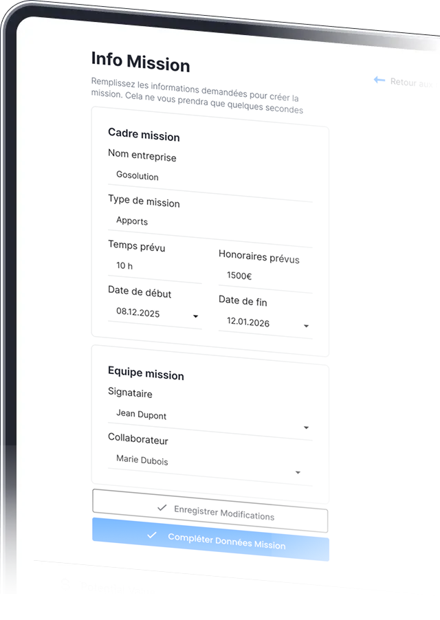
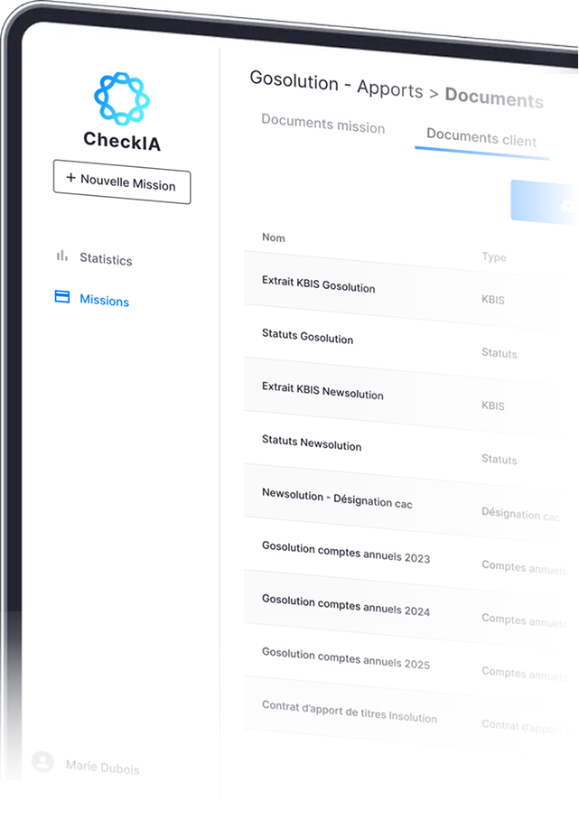
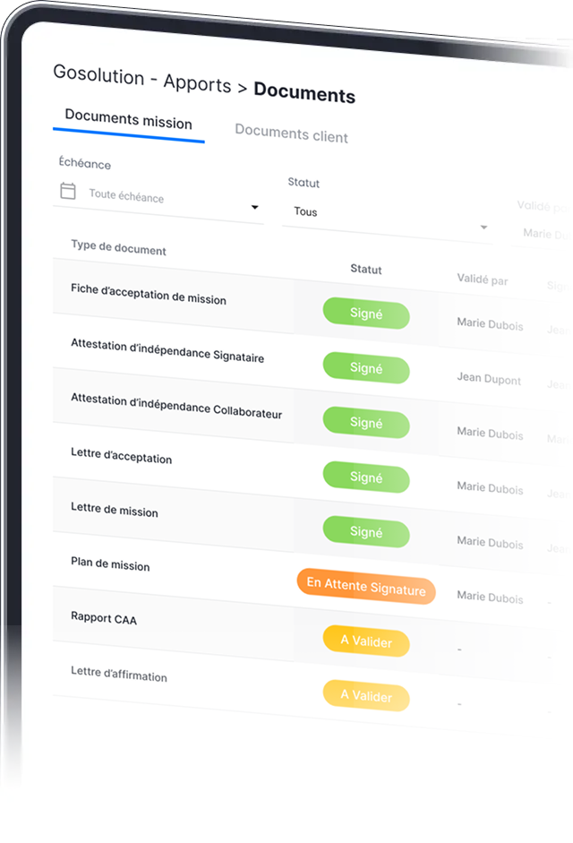
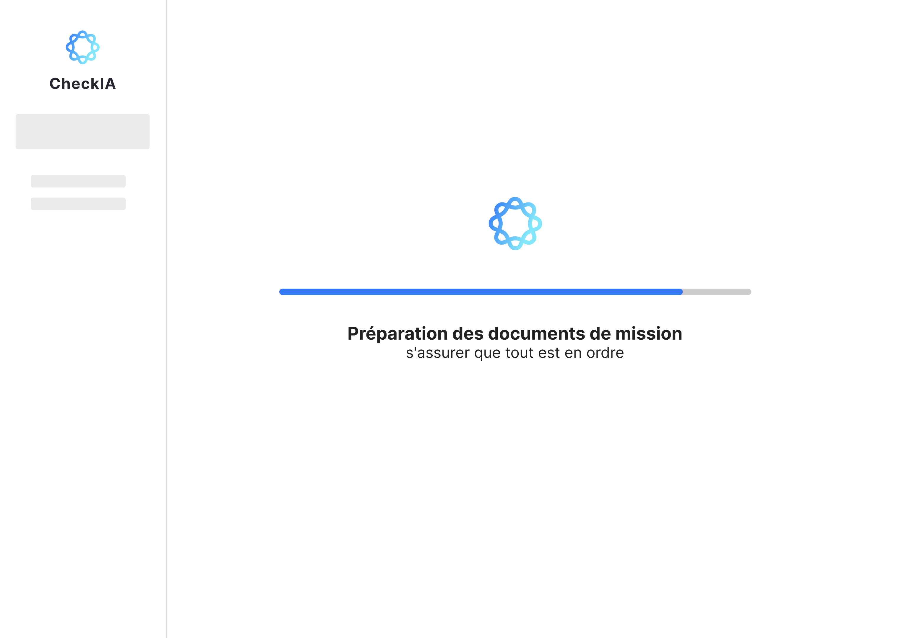
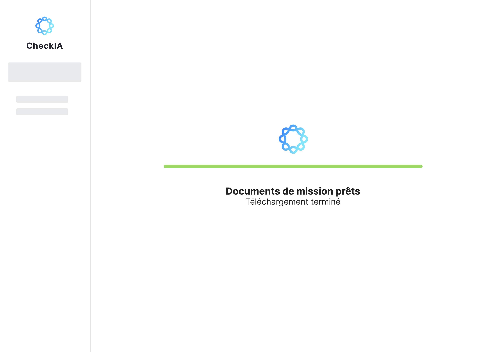
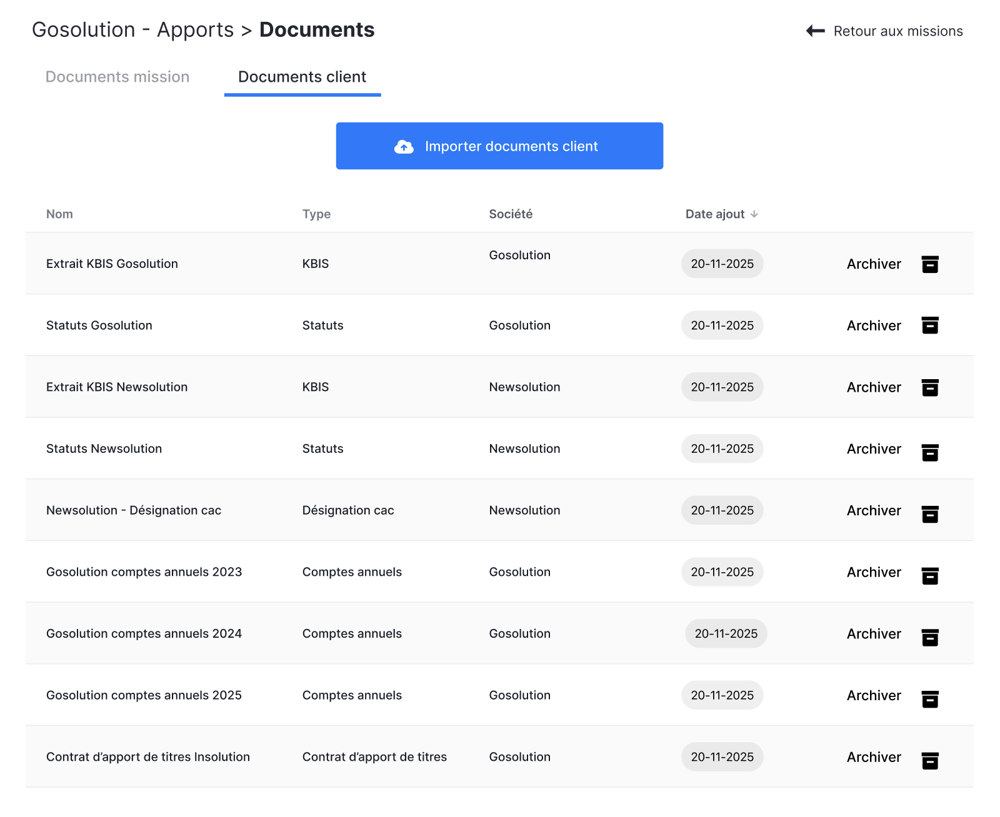
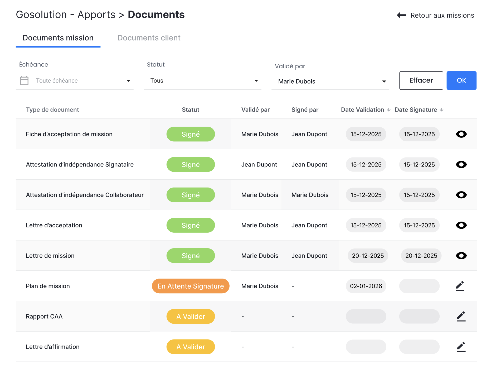

La formalisation représente plus de la moitié du temps d’une mission.
CheckIA la structure, l’homogénéise et l’automatise
dans un cadre conforme aux exigences professionnelles.
Conçu en France par des commissaires aux comptes et des experts en intelligence artificielle.
Sécurité des données · Conformité CNCC · Infrastructure souveraine



Cette production documentaire est :
Répétitive · Manuelle · Chronophage

La production documentaire représente la majorité du temps d’une mission. Rédaction, reformulation et adaptation mobilisent un temps significatif au détriment de l’analyse et de la supervision.
Plus un processus est manuel, plus il expose à des variations et oublis. Ces écarts fragilisent la revue interne et les contrôles qualité.
Les pièces justificatives sont souvent réparties entre différents supports et outils. Leur recherche et leur consolidation deviennent chronophages et sources de fragilité organisationnelle.
CheckIA structure et automatise la production documentaire dans un cadre conforme aux exigences professionnelles. Il réduit significativement le temps consacré à la formalisation, tout en renforçant la cohérence et la traçabilité du dossier, sans intervenir sur le jugement du commissaire aux comptes qui reste maître de la mission.
CheckIA s’intègre dans l’organisation du cabinet.
Il ne modifie ni le rôle ni la responsabilité du commissaire aux comptes.

Conçu par des commissaires aux comptes
Développé en collaboration avec des experts en intelligence artificielle français
Workflows structurés selon les exigences des NEP
Production documentaire homogène, traçable et adaptée aux standards du cabinet.
Cloisonnement strict des données par cabinet
Hébergement en infrastructure souveraine
CheckIA structure et automatise la formalisation des missions de commissariat aux comptes. Chaque fonctionnalité s’intègre naturellement dans le workflow du cabinet.

Optional text to add here

Optional text to add here

Optional text to add here

Optional text to add here
Don’t hesitate to reach out us if you need further assistance.
Présentation structurée de la solution et de son intégration dans l’organisation de votre cabinet.